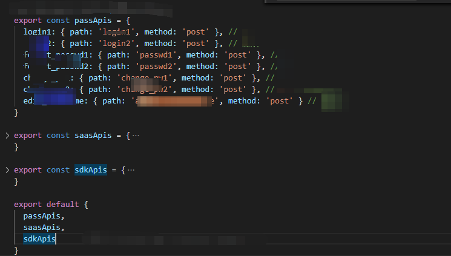

http请求封装（已完成）
build目录下配置api.js配置文件
文件内容配置开发环境 测试环境 线上环境的后台接口地址，一般开发，测试，线上的环境不同，根据不同的打包编译环境导出不同的地址配置，提供给HTTP里面的请求方法使用（后面有介绍）其它js文件通过 process.API_CFG 拿到，比如：
export const ApiCfg = process.API_CFG
const byskingDev = 'http://bysking.com/8080'; // 开发环境
const byskingTest = 'http://bysking.com/8080'; // 测试环境
const byskingPre = 'http://bysking.net'; // 预发布环境
const byskingProd = 'http://bysking.com'; // 生产环境
// const 图片视频域名
const fileUrl = 'http://www.bysking.bc'
// sdk第三方接口域名
const sdk = 'http://www.bysking.sdk'
const myApi = {
dev: {
// 开发环境
byskingDev: byskingDev,
byskingFile:fileUrl,
byskingSdk:sdk,
},
test: {
// 提测环境
byskingDev: byskingTest,
oss:fileUrl,
sdk:sdk,
},
pre: {
// 预发布环境
passport: passportProd,
saas: saasPre,
oss: ossProd,
sdk: sdkProd,
},
prod: {
// 线上环境
passport: passportProd,
saas: saasProd,
oss: ossProd,
sdk: sdkProd,
}
};
//根据运行环境不同拿到不同的环境变量，导出对应的Api后台域名地址
// precess.env.ENV可以拿到运行环境的参数dev, test, pre, prod
module.exports = myApi[process.env.ENV];
新建立libs/http.js
工具模块：
import axios from 'axios'
import merge from 'lodash/merge'
export const ApiCfg = process.API_CFG // 我们自定义的请求域名，就是上面的api.js文件定义请求地址的值
ApiCfg.byskingDev // 拿到后台接口地址
ApiCfg.byskingFile // 后台文件上传的地址
ApiCfg.byskingSdk // 第三方接口请求的地址
导出自定义的ajax请求函数（接受参数）： 请求会需要判断手机端和网页端的不同实现，调用相应的方法函数请求
比如：
reqSass // 数据请求调用
reqPass // 退出系统
reqSdk // 第三方接口调用请求封装
/**
* saas消息请求
* @param {Object} apiObj api对象(必选项)
* @param {Array} routeParams 路由参数
* @param {Object} bodyParams 普通参数
* @param {Bool} isHideLoading 是否隐藏加载动画
* @param {Bool} isHideErrMsg 是否隐藏错误提示
*/
export function reqSaas (...args) {
const baseUrl = isBrowser ? '/bysking/' : ApiCfg.saas // 拼接请求地址的域名 www.bysking.com-->
return http.getInstance().req([baseUrl, ...args]) // 单例模式获取一个请求实例，系统会频繁使用到请求
//用单例性能友好，实例上有一个req自定义的方法
}
参数解释：
apiObj: 比如 {path：‘bysking/user_info’, methods: 'get'}
来自于api.js的定义。
路由参数：
比如 ‘homes/123’--'homes/:home_id' 对应 [home_id]
比如 ‘homes/123/rooms/456’--'homes/:home_id/rooms/:room_id' 对应 [home_id, room_id]
普通参数：比如搜索参数，分页参数，用户名，密码等参数
接下来看看上面使用到的req方法：
http.getInstance().req([baseUrl, ...args])
http是立即执行函数和单例模式的一个函数，调用后会获得唯一的实例（我们事先定义好一个Http的类，我们需要为所有的请求用一个单例实例去处理），
const http = (() => {
let _instance = null
return {
getInstance: () => {
if (!_instance) {
_instance = new Http()
}
return _instance
}
}
})()
定义的Http类：
class Http {
async req ([ // 因为里面会用到await 等待调用系统提供的的底层请求函数
// req函数接受这一堆形式参数，通过数组解构拿到
baseUrl, // http：//www.bysking.com
apiObj, // /api/login
routeParams = null, //[userName: bysking, passWord: 123] ,会显示在地址栏 get
bodyParams = null, // { userName: bysking, passWord: 123 }, 不显示在地址栏，post
isHideLoading = false, // 加载动画的显示与否
isHideErrMsg = false // 错误信息的显示与否
]) {
// 函数体，处理上面的实参参数
this._baseUrl = baseUrl // this 为当前Http对象挂载属性
this._apiObj = apiObj
this._routeParams = routeParams
this._bodyParams = bodyParams
this._isHideLoading = isHideLoading
this._isHideErrMsg = isHideErrMsg
// login1: { path: 'login1', method: 'post' }, // 登录1
// login2: { path: 'login2', method: 'post' }, // 登录2
// forgot_passwd1: { path: 'passwd1', method: 'post' }, // 忘记密码1
// forgot_passwd2: { path: 'passwd2', method: 'post' }, // 忘记密码2
// _apiObj:格式如上，方法名加请求的方式
const { path, method } = this._apiObj // 解构出，请求方法和get,post，put,delete
if (!path || !['get', 'post', 'delete', 'put'].includes(method)) {
// path为空或者方法不包括在['get', 'post', 'delete', 'put']里面
aui.showErr('无效的apiObj')
return // req函数报错并返回
}
if (!this._isHideLoading) aui.showLoading() // 如果设置了请求加载动画
// 判断路由参数是数组并且他有长度执行下一步操作填充api,否则就是原来的path
const apiPath =
Array.isArray(this._routeParams) && this._routeParams.length
? this.fillApi(path)
: path
// 处理普通参数：有的话才处理
this._bodyParams && this.handleBodyParams(this._bodyParams)
// 参数处理完毕后开始拼接
const fullPath =
this._baseUrl +
apiPath +
// const { path, method } = this._apiObj
// 如果请求方式为其中某一项还需要执行查询参数构造 constructQueryParams（）
(['get', 'delete'].includes(method) ? this.constructQueryParams() : '')
// ?id=123&name='liziyu'
util.log('[http-->' + method.toUpperCase() + ']', fullPath, bodyParams) // 打印日志
// 构造统一的请求配置参数
const axiosConfig = {
url: fullPath, // 请求的完整地址
method, // 请求方式
headers: { // 请求头
'X-Access-Token': astore.getAccessToken(), // token
'YD-App': 'ydapp_zs', // 自定参数
// 后端通常会希望获取到json格式的数据,所以通常请求的headers里要设置content-type:application/json
'Content-Type': 'application/json' // 类型 此处一般浏览器会自动识别，如果请求的时候stringify化参数，这里就必须有
}
}
// 请求方式为post put，并且普通参数存在，需要为统一配置参数加上data
if (['post', 'put'].includes(method) && this._bodyParams) {
/* getBrowserState() 函数定义
export const isBrowser = false
// 是否为PC
let _isBrowser = false
/**
* 设置调试状态
* @param {*} state (true: PC，false: 移动端)
*/
export function setBrowserState (state) {
_isBrowser = state
}
// 返回调试状态
export function getBrowserState () {
return _isBrowser
}
axiosConfig.data = getBrowserState() // 此处赋值的时候采用了兼容性的写法判断是在移动端:false还是PC端：true
? this._bodyParams //浏览器
: {
body: JSON.stringify(this._bodyParams) // 移动端body接受参数
}
}
try {
const res = await this.Axios(axiosConfig) //调用Axios发请求
aui.hideToast() // 隐藏加载动画
util.logWarn('[http<--' + method.toUpperCase() + ']', fullPath, 'res:', res) //打印请求结果
if (res && !res.data) { // 有返回结果
res.data = res
}
const { ErrNo, ErrMsg, err_code, err_msg, result } = res.data // 解构其他数据，需要和后台对接具体的数值代表的意义
if (err_code === 401002) {
logout(1500)
}
if (!this._isHideErrMsg) { // 成功请求，但是服务器返回错误信息，比如密码不对。。。已经打开错误提示开关就展示错误信息
if (ErrNo && ErrMsg) {
aui.showErr(ErrMsg)
}
if (err_code && err_msg) {
aui.showErr(err_msg)
}
}
// const { ErrNo, ErrMsg, err_code, err_msg, result } = res.data result存在就返回否则返回最外层的res.data
return { res: result ? res.data.result : res.data, err: null } //A 和下面的B结合起来看，一个正确处理一个错误处理，统一对当前封装的请求函数进行统一格式返回，方便调用者统一处理
} catch (err) { // 请求失败
util.logWarn('[http<--' + method.toUpperCase() + ']', fullPath, 'err:', err) // 打印错误
const err2 = err.body ? err.body : err.response.data
const { err_code, err_msg } = err2
if (err_code === 401002) {
logout(300) // 退出系统
}
if (err_msg && !this._isHideErrMsg) {
aui.showErr(err_msg)
}
return { res: null, err: err2 } //B
}
}
// 封装请求，里面根据环境选择不同的api请求处理
async Axios (baseConfig) {
// 请求运行环境需要添加的额外的兼容配置
baseConfig,
getBrowserState()
: { timeout: 60, encode: false, charset: 'utf-8', dataType: 'json' } // 移动端添加需要的配置
)
// 封装函数返回一个函数掉用
return getBrowserState()
? await axios(config)// pc浏览器
: await new Promise((resolve, reject) => { // 移动端调用回调，使用apicloud封装的接口
api.ajax(config, (res, err) => {
if (err || !res) {
util.logWarn('[http<--ajax]', 'err:', err)
reject(err) // 失败回调携带失败数据
}
resolve(res) // 成功回调，携带成功的数据
})
})
}
// 函数的作用就是把路径中的‘：room_id’替换为实际的值，从路由参数里面按照顺序匹配
fillApi (path) {
const reg = /:/ // 正则函数模板比如路由对象
// 函数的功能就是把这个路由里面的参数room_id给拼接上去
// getRoom: { path: 'rooms/:room_id', method: 'get' }, // 获取房间
// 所以需要匹配 ：号
if (!reg.test(path)) return path // 找不到‘：’则不需要拼接url数据,返回
、
return path
.split('/') // 得到数组 [rooms, :room_id]
.map(item => {
// this._routeParams === [001]
return reg.test(item) ? this._routeParams.shift() : item
}) // shift()会改变req传进来的路由参数数组长度，删除并返回第一个元素，按照顺序把room_id替换为具体的值
.join('/')
// 构造出替换后的地址：
// 'getroom/:room_id'==>[getroom, :room_id]
// ==> [getroom, 001] ==> 'getroom/001'
}
// 处理普通参数 内部有递归，去掉里面key对应值为null和undefined和空数组的值
{
id: 123,
name: haha,
sex: undefined, // 需要清除此项
user: {
name: lisi,
url: null // 需要清除此项,
interest: [] // 需要清除此项
}
}
handleBodyParams (bodyParams) {
// Object.keys(bodyParams) 遍历参数对象的每一个key得到key数组
Object.keys(bodyParams).forEach(bodyKey => {
const bodyValue = bodyParams[bodyKey] // 获取到每一个bodyParams的key对应的值值
// 以下代码的作用：清除普通参数对象里面key对应值为的null和undefined和空数组的成员
if (
(!bodyValue && // 值为空null undefined...NaN, false
typeof bodyValue !== 'number' && // 不是number
typeof bodyValue !== 'boolean') || // 不是boolean
(Array.isArray(bodyValue) && !bodyValue.length) // 或者是数组但长度为零
) {
// 清除null和undefined和空数组的body
delete bodyParams[bodyKey]
}
if (!!bodyValue && typeof bodyValue === 'object') { // 有东西，并且是一个对象
// 递归处理，去掉里面key对应值为null和undefined和空数组的值
this.handleBodyParams(bodyValue)
}
})
}
// constructQueryParams() 函数的作用就是构造查询参数（get delete），会显示在地址栏中
/* {
id: 123,
name: liziyu
}
*/
===》
/*
?id=123&name='liziyu'
*/
constructQueryParams () {
if (!this._bodyParams) { //普通参数没有
return ''
}
return Object.keys(this._bodyParams).reduce((result, key) => {
const value = this._bodyParams[key]
return (result += (result === '' ? `?` : '&') + `${key}=${value}`)
}, '')
}
}
都可以用来合并对象
都会修改原来的对象 (如果原来的对象是作为函数的第一个参数的话)
不同之处
assign 函数不会处理原型链上的属性，也不会合并相同的属性，而是用后面的属性值覆盖前面的属性值
extend
3.x 版本中和 assign 一样
4.x 版本中会合并原型链上的属性
merge 遇到相同属性名的时候，如果属性值是纯对象或集合的时候，会合并属性值
api请求地址分类以及格式
